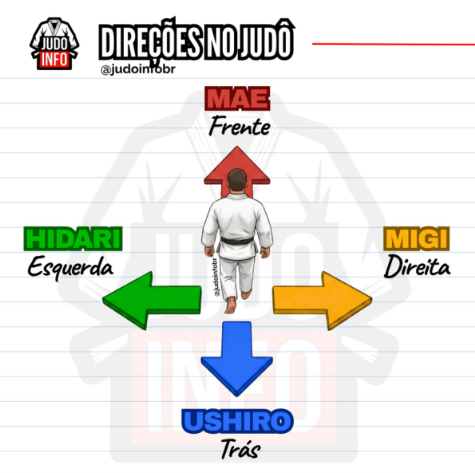
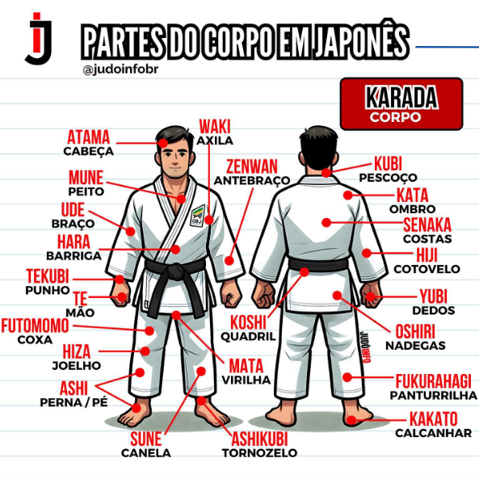

Faixa Branca
O que é Judô?
O Judô é uma arte marcial, um esporte de combate e um sistema de defesa pessoal criado no Japão em 1882 por Jigoro Kano.
O objetivo: Não é apenas vencer o oponente pela força bruta, mas sim usar a força e o peso do adversário contra ele mesmo.
A técnica: Baseia-se em desequilíbrios, projeções (quedas), imobilizações, chaves de braço e estrangulamentos.
A filosofia: O lema central é "máxima eficiência com o mínimo esforço". Além de lutar, o judô ensina respeito, disciplina, autoconfiança e harmonia, sendo conhecido como o "caminho suave".
História do Judô:
Quem foi Jigoro Kano?
Regras básicas:
Etiqueta no Dojo:
Cumprimentos (Rei):
Ukemi (Quedas):
Vocabulário básico:
Direções em Japonês:

Números em Japonês:

Partes do Corpo em Japonês:
